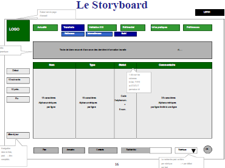
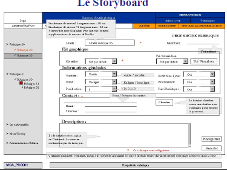
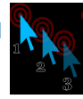

- La phase de conception et ses éléments
- Les parties fonctionnelle et technique
- Principes d’ergonomie et de navigation (arborescence, schéma fonctionnel et storyboard)
- L’arborescence
- Le Schéma Fonctionnel
- Le Schéma Fonctionnel
- Le Storyboard
- Eléments d’ergonomie
- La Charte Graphique
- Les écrans maîtres
- La page d’accueil (home Page)
•De plus il permet à partir de la hiérarchisation des rubriques
de déterminer les différentes navigations (navigation primaire – niveau principal-, secondaire, et tertiaire, voire quaternaire –
niveaux de fond).
• Le Schéma Fonctionnel ne prend pas en compte les choix
technologiques mais peut y renvoyer.
• En effet, des choix ou des orientations fixées par le Schéma
Fonctionnel découlent des contraintes de structure de page et
de hiérarchie de contenu.
Le Storyboard
• Le Storyboard correspond à une vue fonctionnelle détaillée des pages.
• Un Storyboard ne représente en rien une mise en page réelle ou une
réalité graphique des pages mais s’attache à représenter tous les
éléments ou zones informationnelles et/ou fonctionnelles.
• Il présente également les différentes interactions qui existent entre les
éléments constitutifs d’un site.
• Le storyboard présente les navigations primaires, secondaires, tertiaires
ainsi que les zones de recherche ou autre fonctionnalité.
• Contrairement à l’arborescence et au Schéma Fonctionnel, le
Storyboard est directement impacté par les spécifications techniques et
ergonomiques.
• Le Storyboard représente non seulement la fonction des éléments mais
également leur type et l’utilisation de l’espace.
• Une boite de sélection est symbolisée comme un objet de type “ select
box de formulaire ”.
•Une page contient une liste de résultats composée de trois colonnes,
le Storyboard peut simplement représenter schématiquement la
proportion des trois colonnes dans le tableau.
• Mais pour que ce tableau soit valide et réalisable, il est important
d’indiquer la quantité de caractères à utiliser par ligne et par colonne.
• Ces quantités proviennent généralement des spécifications
techniques ou du modèle de données.
• Il est en fait très important de savoir que la première colonne doit
accueillir 12 caractères numériques, la seconde 40 caractères
alphanumériques en majuscules et la troisième un pictogramme de
taille connue.
• Ces informations ont une influence directe sur la faisabilité de la
page.
• Tout site doit être développé sous une résolution d’écran. Le plus
courant est le 800*600, ou encore le 1024*758.
• Le Storyboard spécifie la présence ou non de Frames.
• Le Story-board sera donc utilisé par les différents intervenants
lors de la réalisation des interfaces.
• Les graphistes l’utilisent comme références pour qualifier les
différents éléments de la page;
• les ingénieurs l’utilisent comme référentiel fonctionnel au
niveau client;
• les intégrateurs HTML comme référentiel fonctionnel et guide
des différents éléments à intégrer.
• Tous les écrans d’un site n’ont pas à être représenté dans un
Storyboard.


• La règle des “ trois clics ” énoncée pour l’arborescence doit
permettre à l’utilisateur d’atteindre l’information recherchée
en trois clics (hors processus de recherche).
• Cette règle repose sur deux observations,
• la première concernant le temps limité que l’utilisateur
accepte de passer avant de trouver ce qu’il cherche
• et la seconde sur l’étude de la mémorisation des
chemins et de l’espace.
• l’accès à l’information doit être simple et direct
